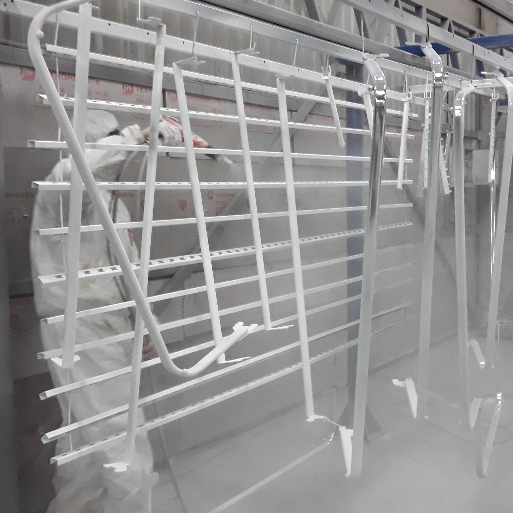

В современной промышленности используется множество методов обработки металла.
Особого внимания заслуживает порошковая покраска металлоизделий.
Данный способ имеет следующие преимущества:
Изделия из металла надёжно защищаются от коррозии.
Они приобретают привлекательный внешний вид.
Заслуживает внимания то, что при порошковой покраске металлоконструкций можно выбирать любой цвет
из числа тех, что представлены в каталоге RAL.
Металлические изделия остаются безопасными в экологическом отношении.
Данная технология приводит к минимальному удорожанию изделий из металла.
Недостатки порошкового окрашивания:
Невозможно добиться уникального оттенка — необходимо выбирать из представленной цветовой гаммы.
Технологии ручного нанесения не существует — покраска металла порошком возможна только в заводских
условиях и с применением специализированного оборудования.
Дефект окрашивания не корректируется локально — можно лишь полностью перекрасить элемент.
Покраске поддаются только те материалы, которые выдерживают температурное воздействие до 200 градусов,
а это не всегда допустимо.
Есть ограничения по габаритам деталей, они должны помещаться в камеру полимеризации.
Виды порошковых красок по составу смол:
Эпоксидные. Эти составы отличаются высокой прочностью, устойчивостью к воздействию химикатов, масел
и топлива. Они не требуют предварительного грунтования и при этом сами могут использоваться в качестве
грунтовочного слоя перед окраской металлоконструкций жидкими порошковыми составами.
Так как эпоксидные краски не являются проводниками электричества, они нашли широкое применение в электро-
и радиотехнических отраслях для повышения коррозийной устойчивости деталей.
Эпоксидно-полиэфирные. Ценятся за свои декоративные свойства и способны создавать необычные
визуальные эффекты,например, тисненой кожи или патины. Однако по устойчивости к окислению и влиянию окружающей
среды этот вид проигрывает другим.
Полиэфирные. Отличаются стойкостью перед механическими, атмосферными воздействиями, истиранию.
Характеризуются высокой адгезией, что делает их универсальными для покраски металлоконструкций из любых
видов металлов, в том числе легких сплавов. Отличные изоляторы. Уязвимы к действию щелочи.
Этапы порошковой покраски
При покраске металла порошковой краской последовательно выполняется несколько этапов:
Подготовка поверхности, на которую будет наноситься краска. При реализации этого этапа с поверхности
изделия удаляются загрязнения и окислы, она тщательно обезжиривается и подвергается фосфатированию.
Предварительная подготовка значительно улучшает адгезию, обеспечивает долговечность лакокрасочного покрытия
и надёжность защиты окрашенных изделий от коррозии.
Распыление порошковой краски.
Выполняется в специальных окрасочных камерах. Краска наносится на поверхность металлических изделий с помощью
окрасочных пистолетов. Она представляет собой смесь частиц красящего пигмента и каучука. Пистолеты придают
частицам электрический заряд, благодаря которому они притягиваются к поверхности окрашиваемого изделия
и удерживаются на ней до следующего этапа.
Полимеризация нанесенной краски.
Выполняется в камере полимеризации, где изделие нагревается, вследствие чего частицы краски плавятся
и растекаются по поверхности, прочно соединяясь с ней. После того как изделие остынет, порошковая покраска
металла считается законченной.
Оборудование для порошковой покраски
Технология окрашивания изделий из металла порошковой краской реализуется с применением современного оборудования:
Покрасочная камера.
В ней на поверхность металлического изделия наносится порошковая краска (для этого используются окрасочные
пистолеты). Покрасочная камера имеет два проёма (входной и выходной), она оснащена вентилятором, коллектором,
пультом управления и рядом других приспособлений.
Печь полимеризации.
Используется для термического закрепления краски на поверхности окрашиваемого металлического изделия. Эта печь
оснащена нагревательными элементами, которые за время, не превышающее получаса, нагревают воздух в печи
(а вместе с ним и изделие) до температуры 130-220°С. Краска, которая в виде порошка находится на поверхности
изделия, плавится и образует тонкую плёнку, прочно сцепляющуюся с металлическим основанием. Время полимеризации,
как правило, варьируется от 10 до 30 минут.
Транспортная система.
В её состав входят устройства, предназначенные для перемещения тележек с металлическими изделиями, их загрузки
в камеры и выгрузки.

При создании страницы использованы текстовые материала сайта pokras.ru